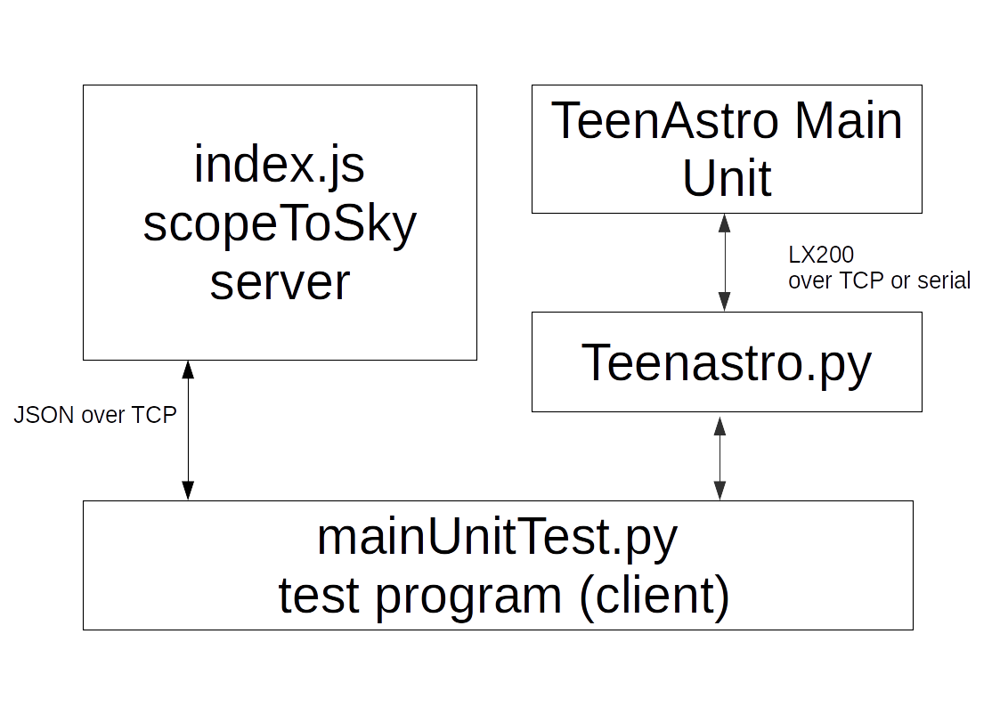
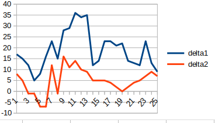
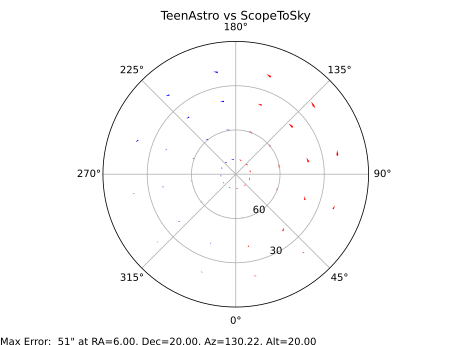

Scope to Sky and TeenAstro
Mel Bartel’s Scope to Sky calculator, written in Javascript with an HTML user interface, has several functions:
- Given sky coordinates (either Right Ascension or Hour Angle, and Declination), compute a telescope’s axis positions.
- Given a telescope’s axis positions, compute the corresponding sky coordinates.
- For a telescope with encoders, display encoder values for a given telescope position or compute telescope position according to the encoder values.
The configuration includes:
- Setup site, time and date, time zone
- equatorial and altazimuth mounts
- Correction for precession, nutation and annual aberration
- Correction for refraction
- For equatorial mounts, set pier side (mount flip)
- Conversion styles (trigonometry or matrix)
- Tracking rates algorithms (method for computing the rates)
- Encoder gears
Notes:
- The primary and secondary axes are easy to understand (RA/Dec for eq mounts, Az/Alt for Altaz mounts). The third axis is the rotation of the tube relative to the sky. For equatorial mounts, this is always zero.
- The “alignment” options include a third option called “star”. What does this do?
- The lower panel, labeled Matrix coordinate conversion, allows setting 2 or 3 alignment positions (each with RA, Dec, Az, Alt and sidereal time) and telescope fabrication errors (misalignments). How does this work?
How to use it for testing TeenAstro Firmware
We generate a set of test cases (sky positions, site, time etc.), use ScopeToSky to compute axes positions for each, and use them as Goto targets for a TeenAstro. We read the stepper counts for both axes, normalize them back to degrees, and compare with the computed values.
Of course this tests only the software part, up to the stepper control signals. Any errors with the motors (stalling etc.) or the mount (backlash, orthogonality etc.) will not be detected.
Astro-Physics has an excellent document that explains how to check the mount orthogonality
Program design

The original ScopeToSky runs from a web page, with a human in front of the screen.
For our purpose, it has been ported to run under node.js, from the command line. The functionality is the same, but it is now controlled via a TCP/IP socket. The commands sent by the Python program and the results sent back by ScopeToSky are encoded as a JSON stream (JavaScript Object Notation).
The Python program reads configuration from 2 files, a static one (for parameters which do not change between tests) and a dynamic one (for test cases)
The static configuration is coded in a YAML file, (which is more readable than JSON, but contains the same data).
For the dynamic configuration, we use a CSV file with a list of test cases (one line for each). Each test case contains an arbitrary number of parameters that override the static configuration. For example we can set a different Right Ascension, Declination, pier side, site latitude etc. and get the axis positions for each.
The Python program generates the parameters for each test case, sends the GOTO commands to TeenAstro. When the mount stops slewing, it reads the step counts. It then send an equivalent command to ScopeToSky, receives the results, and prints out the results from both, with the differences in arc-seconds.
Installing
Unzip the archive, install Python 3.7 or above and nodejs v8.10 or above. Install these Python packages: serial, PySerial, ruamel.YAML and telnet, and these nodejs modules: yaml, fs.
Running the program
1 - start the ScopeToSky server: change to the scopetosky root directory, run node index.js
2 - run the Python test program: python3 mainUnitTest.py [-c <config_file> -t <testcase_file>]
At this time, only computeScope() and computeEquatCoords() are implemented. I don't yet understand the encoders and matrix conversions sections.
Sample YAML configuration file
In this file, each line corresponds to a control in Mel Bartel’s original web page, arranged in the same sections. The command section describes which command is to be executed, and the fields to display.
The output section describes which internal variables we want to display. (see complete list of variables below)
config.yaml
#command
command: computeScope
output: RA dec latitude includeRefraction primaryAxis secondaryAxis
#coordinates
RAHA: '8:00:00'
RAorHA: 'RA'
dec: '0:00'
includeCorrections: false
coordinateYear: '2000'
# setup
currentDateTime: false
dateTime: 'Oct 10, 2020 00:00:00'
timeZone: '2'
latitude: '44.75'
longitude: '5.75'
# telescope
includeRefraction: true
alignment: 'equatorial'
conversionStyle: 'trig'
trackingRatesAlgorithm: 'deltaTime'
canFlipMeridian: true
flippedState: 'onEastSidePointingWest'
flipped: false
primaryAxis: '0.0'
secondaryAxis: '0.0'
Example of test case list
In this example, we move to a series of points at declination 50 degrees, and RA from 1 to 14 hr
tests.csv
RAHA;dec
01:00:00; 50:00:00
00:00:00; 50:00:00
23:00:00; 50:00:00
22:00:00; 50:00:00
21:00:00; 50:00:00
20:00:00; 50:00:00
19:00:00; 50:00:00
18:00:00; 50:00:00
17:00:00; 50:00:00
16:00:00; 50:00:00
15:00:00; 50:00:00
14:00:00; 50:00:00
Results
Results are printed in CSV format, easy to load into a worksheet:
RA, Dec, computedAxis1, computedAxis2, pierSide, actualAxis1, actualAxis2, delta1, delta2,
01:00:00, 50:00:00, 87.1529, 129.9852, E, 87.1576, 129.9873, 17, 8
00:00:00, 50:00:00, 102.1837, 129.9772, E, 102.1880, 129.9786, 15, 5
23:00:00, 50:00:00, 117.2144, 129.9652, E, 117.2177, 129.9648, 12, -1
22:00:00, 50:00:00, 132.2465, 129.9429, E, 132.2480, 129.9427, 5, -1
21:00:00, 50:00:00, 147.2811, 129.9103, E, 147.2832, 129.9083, 8, -7
20:00:00, 50:00:00, 162.3303, 129.8656, E, 162.3347, 129.8638, 16, -7
19:00:00, 50:00:00, 177.4052, 129.8309, E, 177.4116, 129.8342, 23, 12
18:00:00, 50:00:00, 12.6972, 50.1505, W, 12.7013, 50.1503, 15, -1, -6
17:00:00, 50:00:00, 27.7538, 50.1018, W, 27.7615, 50.1061, 28, 16, -3
16:00:00, 50:00:00, 42.7926, 50.0643, W, 42.8006, 50.0673, 29, 11, 12
15:00:00, 50:00:00, 57.8218, 50.0377, W, 57.8317, 50.0415, 36, 14, -11
14:00:00, 50:00:00, 72.8521, 50.0227, W, 72.8614, 50.0254, 34, 10, -13
13:00:00, 50:00:00, 87.8819, 50.0128, W, 87.8917, 50.0153, 35, 9, 8
These errors can be easily plotted into a chart:

Examples of complete test
A small Python program (testReport.py) displays the errors in a friendly way. The length of the arrows indicates the differences in arc-seconds between computed and measured coordinates.
Note : On a typical screen we have roughly 500 pixels for 100 degrees, or 1 pixel for 12 arc minutes. Therefore the arrows are exaggerated by a factor of 720.
TATestReport requires the following Python packages: matplotlib, numpy, pandas.

Next steps
Right now the test program assumes that the mount is perfectly aligned.
The next step will be to display the effect of alignment (2 and 3-star) on the errors.
Another possibility is to use the skyfield Python library instead of ScopeToSky. It is modern and very, very precise.
List of ScopeToSky variables that can be selected for output
This is a subset of the global ScopeToSkyState structure.
RAorHA
RAHA
dec
HAOffset
JD
SidT
trackingRates
includeCorrections
includeRefraction
latitude
longitude
trackingRatesAlgorithm
coordinateYear
scopeAzimuth
scopeAltitude
alignment
conversionStyle
canFlipMeridian
flipped
primaryAxis
secondaryAxis
tertiaryAxisa